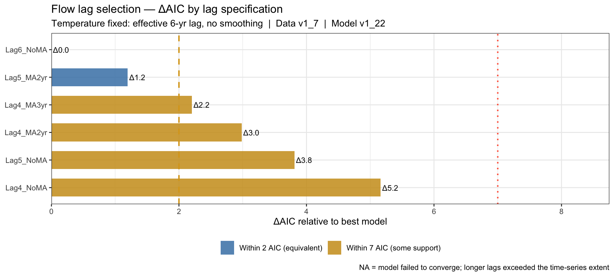
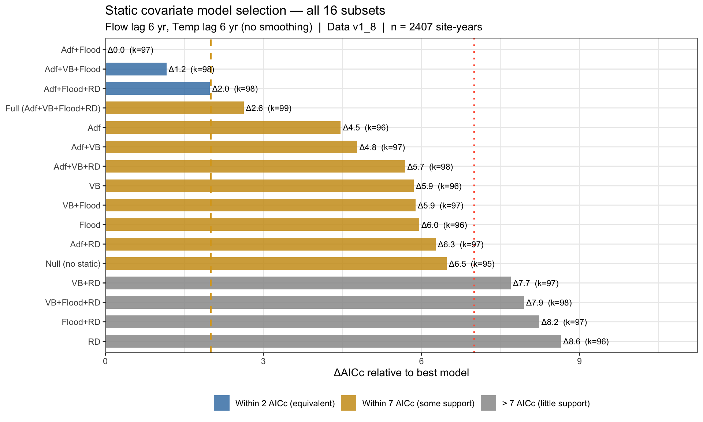
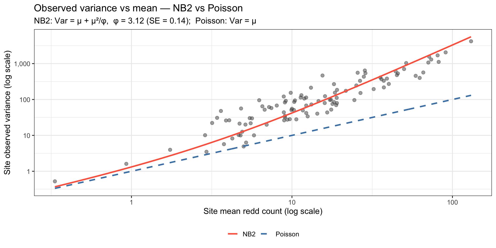
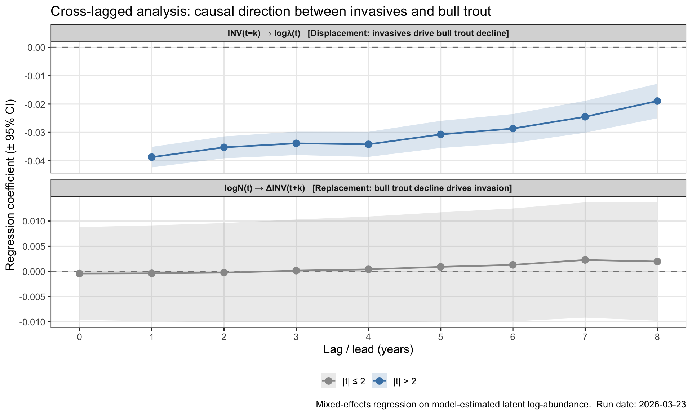
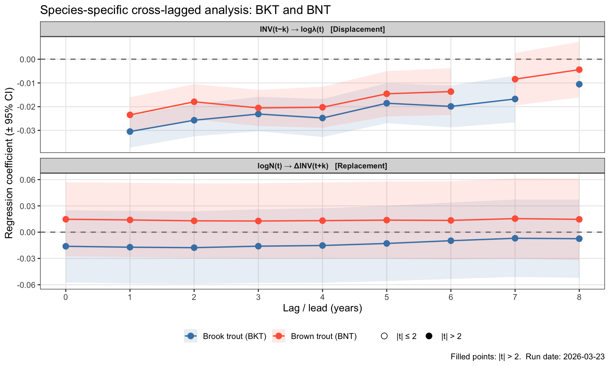

Show code
library(here)
library(tidyverse)
library(knitr)
library(kableExtra)TMB State-Space Ricker Model — v1.22
library(here)
library(tidyverse)
library(knitr)
library(kableExtra)# ── Version identifiers ──────────────────────────────────────────────────────
DataVersion <- "1_10"
ModelVersion <- "1_22"
RunVersion <- "1_21"
FunctionVersion <- "1_13"
SaveName <- paste0("MPVA_Fit_D", DataVersion, "_M", ModelVersion, "_R", RunVersion)
# ── Helper functions ─────────────────────────────────────────────────────────
source(here("Code", paste0("MPVA_Functions", FunctionVersion, ".R")))
# ── Load saved model fit ─────────────────────────────────────────────────────
fit <- readRDS(here("Results", paste0(SaveName, ".RDS")))
list2env(fit, envir = .GlobalEnv)<environment: R_GlobalEnv>nPop <- data_list$nPop
nCore <- data_list$nCore
pop_core_vec <- data_list$pop_core + 1L # 1-indexed core for each pop
# ── Convenience extractors ───────────────────────────────────────────────────
get_rep <- function(pname) {
list(
est = fit_rep$value[names(fit_rep$value) == pname],
se = fit_rep$sd[names(fit_rep$value) == pname]
)
}
re_summ <- summary(fit_rep, select = "random")
get_re <- function(nm) unname(re_summ[rownames(re_summ) == nm, "Estimate"])This document presents the model structure and key diagnostics for a hierarchical state-space Ricker model fit to bull trout redd count time series across multiple local populations nested within core areas. Detailed results (e.g., covariate effects, population trajectories, exposure and sensitivity, and future viability projections) are in the Model Results tab.
The model uses a three-level spatial structure:
| Level | Unit | N |
|---|---|---|
| Core area | Watershed complex | 26 |
| Local population | Spawning tributary | 80 |
| Survey site | Redd count reach | 105 |
year_range <- range(DatYears)
n_obs <- sum(!is.na(data_list$ReddCounts))
n_possible <- prod(dim(data_list$ReddCounts))
data.frame(
Metric = c("Years", "Core areas", "Local populations",
"Survey sites", "Site-year observations", "Data coverage"),
Value = c(
paste(year_range[1], "–", year_range[2]),
data_list$nCore,
data_list$nPop,
data_list$nSites,
n_obs,
paste0(round(100 * n_obs / n_possible, 1), "%")
)
) |>
kable(col.names = c("Metric", "Value")) |>
kable_styling(bootstrap_options = c("striped", "hover"), full_width = FALSE)| Metric | Value |
|---|---|
| Years | 1984 – 2022 |
| Core areas | 26 |
| Local populations | 80 |
| Survey sites | 105 |
| Site-year observations | 2407 |
| Data coverage | 58.8% |
The latent population abundance follows a density-dependent Ricker process with AR(1) process error:
\[\log N_{p,t} = \log N_{p,t-1} + R_{p,t} + \varepsilon_{p,t}\]
where the instantaneous growth rate is:
\[R_{p,t} = b_{0r,p} + \beta_{\text{Flow},p} \cdot \text{Flow}_{p,t-1} + \beta_{\text{Temp},p} \cdot T_{p,t-1} + \beta_{\text{Temp}_2} \cdot T_{p,t-1}^2 + \beta_{\text{INV},p} \cdot \text{INV}_{p,t-1} + \beta_{\text{LKT},M} \cdot \text{LKT}_{c,t-1} - \phi_p \cdot D_{p,t-1}\]
Process errors follow an AR(1) structure:
\[\varepsilon_{p,t} = \rho \cdot \varepsilon_{p,t-1} + \eta_{p,t}, \quad \eta_{p,t} \sim \mathcal{N}\!\left(0,\; \sigma_N \sqrt{1-\rho^2}\right)\]
All dynamic covariates carry an effective lag of 6 years, reflecting the time from larval/juvenile conditions to adult redd counts.
Redd counts at each survey site follow a Negative Binomial (NB2) distribution:
\[C_{s,y} \sim \text{NB2}\!\left(\mu_{s,y},\; \phi_{\text{obs}}\right), \quad \mu_{s,y} = 0.5 \cdot N_{p,y} \cdot \pi_s \cdot \exp(\beta_{\text{FC}} \cdot \text{Flow}_{p,y})\]
where \(\phi_{\text{obs}}\) is the NB2 dispersion parameter (\(\text{Var} = \mu + \mu^2/\phi_{\text{obs}}\); as \(\phi_{\text{obs}} \to \infty\) the distribution collapses to Poisson), \(\pi_s\) is the fraction of population habitat surveyed at site \(s\), and \(\beta_{\text{FC}}\) captures the contemporaneous same-year flow effect on redd/adult ratios (observation model only; does not enter the state equation).
For populations with electrofishing data, model-based CPUE (fish km⁻¹) provides an independent abundance index:
\[\log(\text{CPUE}_i) \sim \mathcal{N}\!\left(\log N_{p,y} - \log(\text{extent}_p) + q_s,\; \sigma_{\text{CPUE}}\right)\]
where \(q_s\) is a section-level catchability random effect that absorbs persistent efficiency differences among electrofishing reaches.
| Parameter | Hierarchy |
|---|---|
| Baseline growth rate \(b_{0r}\) | Global → Core → Population |
| Density dependence \(\phi\) | Global → Population |
| Flow slope \(\beta_\text{Flow}\) | Global → Population |
| Temperature slope \(\beta_\text{Temp}\) | Global → Population |
| Invasive slope \(\beta_\text{INV}\) | Global → Population |
| Lake trout slope \(\beta_\text{LKT}\) | Global (cores areas with lake trout only) |
| Adfluvial access, unconfined valley bottom | Global on \(b_{0r}\) mean |
| W95 winter flood frequency, road density | Global on \(b_{0r}\) mean |
| Stage | Observation model | Fixed | Purpose |
|---|---|---|---|
| A | Poisson | All SDs, AR(1) ρ | Initialize latent states |
| B1 | Poisson | All SDs | Stabilize hierarchy under Poisson |
| B2 | NB2 | — | Full model |
Bull trout have a complex life history: eggs are deposited in fall, incubate over winter, and juveniles spend several years rearing in streams before migrating to larger rivers or lakes, and eventually returning as adults to spawn. We therefore tested a range of lags between environmental conditions and the observed adult redd count response. With temperature fixed at an effective 6-year lag (the best-supported specification from earlier runs), we searched a grid of effective lags 4–8 years × moving-average windows (none, 2-year, 3-year) for summer streamflow (15 combinations total). All models used the 3-stage NB2 fitting procedure; comparison is by marginal AIC.
fl <- readRDS(here("Results", "FlowLagSearch_2026-03-22.RDS"))
fl_plot <- fl$results_df |>
filter(!is.na(AIC)) |>
mutate(
ma_label = case_when(
MovAvgF == 0 ~ "No moving average",
MovAvgF == 2 ~ "2-year MA",
MovAvgF == 3 ~ "3-year MA"
),
label = factor(label, levels = rev(label[order(AIC)])),
fill_grp = case_when(
delta_AIC <= 2 ~ "Within 2 AIC (equivalent)",
delta_AIC <= 7 ~ "Within 7 AIC (some support)",
TRUE ~ "> 7 AIC (little support)"
) |> factor(levels = c("Within 2 AIC (equivalent)",
"Within 7 AIC (some support)",
"> 7 AIC (little support)"))
)
ggplot(fl_plot, aes(x = label, y = delta_AIC, fill = fill_grp)) +
geom_col(alpha = 0.85, width = 0.65) +
geom_hline(yintercept = 2, linetype = 2, color = "goldenrod", linewidth = 0.8) +
geom_hline(yintercept = 7, linetype = 3, color = "tomato", linewidth = 0.8) +
geom_text(aes(label = sprintf("Δ%.1f", delta_AIC)),
hjust = -0.1, size = 3.2) +
scale_fill_manual(
values = c("Within 2 AIC (equivalent)" = "steelblue",
"Within 7 AIC (some support)" = "goldenrod3",
"> 7 AIC (little support)" = "grey60"),
name = NULL
) +
scale_y_continuous(expand = expansion(mult = c(0, 0.25))) +
coord_flip() +
labs(
x = NULL,
y = "ΔAIC relative to best model",
title = "Flow lag selection — ΔAIC by lag specification",
subtitle = sprintf(
"Temperature fixed: effective %d-yr lag, no smoothing | Data v%s | Model v%s",
fl$TempLag + 1, fl$DataVersion, fl$ModelVersion
),
caption = "NA = model failed to converge; longer lags exceeded the time-series extent"
) +
theme_bw(base_size = 11) +
theme(legend.position = "bottom")
The 6-year effective lag with no moving average (Lag6_NoMA) has the lowest AIC. The next-best models all involve shorter lags with multi-year smoothing, which may be capturing a similar biological signal through averaging. Given the clean biological interpretation of 6 years corresponding to the average age-at-maturity an unsmoothed 6-year lag is preferred. This specification is used in all subsequent model runs.
With the flow lag fixed, we tested all 16 subsets of four static habitat scalars that shift the population-level baseline growth rate:
| Covariate | Abbreviation | Biological hypothesis |
|---|---|---|
| Adfluvial access (binary) | Adf | Lake-connected populations have higher access to productive food sources and thermal refuge in hypolimnetic waters |
| Unconfined valley bottom (z-score) | VB | Often used as a proxy for upwelling potential. |
| W95 winter flood frequency (z-score) | Flood | High-flow winters scour redds and reduce recruitment |
| Road density in valley bottom (z-score) | RD | Roads increase fine sediment delivery, connectivity, and reduce egg-to-fry survival |
Dynamic covariates (flow, temperature, invasives, lake trout) were held at the selected lag specification throughout. Comparison is by AICc.
sc <- readRDS(here("Results", "StaticCovarSelection_2026-03-23.RDS"))
sc_plot <- sc$results_df |>
filter(!is.na(AICc)) |>
mutate(
label = factor(label, levels = rev(label[order(AICc)])),
fill_grp = case_when(
delta_AICc_vs_best <= 2 ~ "Within 2 AICc (equivalent)",
delta_AICc_vs_best <= 7 ~ "Within 7 AICc (some support)",
TRUE ~ "> 7 AICc (little support)"
) |> factor(levels = c("Within 2 AICc (equivalent)",
"Within 7 AICc (some support)",
"> 7 AICc (little support)"))
)
ggplot(sc_plot, aes(x = label, y = delta_AICc_vs_best, fill = fill_grp)) +
geom_col(alpha = 0.85, width = 0.65) +
geom_hline(yintercept = 2, linetype = 2, color = "goldenrod", linewidth = 0.8) +
geom_hline(yintercept = 7, linetype = 3, color = "tomato", linewidth = 0.8) +
geom_text(aes(label = sprintf("Δ%.1f (k=%d)", delta_AICc_vs_best, k_fixed)),
hjust = -0.05, size = 3.0) +
scale_fill_manual(
values = c("Within 2 AICc (equivalent)" = "steelblue",
"Within 7 AICc (some support)" = "goldenrod3",
"> 7 AICc (little support)" = "grey60"),
name = NULL
) +
scale_y_continuous(expand = expansion(mult = c(0, 0.30))) +
coord_flip() +
labs(
x = NULL,
y = "ΔAICc relative to best model",
title = "Static covariate model selection — all 16 subsets",
subtitle = sprintf(
"Flow lag %d yr, Temp lag %d yr (no smoothing) | Data v%s | n = %d site-years",
sc$FlowLag + 1, sc$TempLag + 1, sc$DataVersion, sc$n_obs
)
) +
theme_bw(base_size = 11) +
theme(legend.position = "bottom")
sc$results_df |>
filter(!is.na(AICc)) |>
select(label, use_Adfluvial, use_VB, use_Flood, use_RD,
AICc, delta_AICc_vs_best, AICc_weight) |>
mutate(
across(c(use_Adfluvial, use_VB, use_Flood, use_RD),
~ ifelse(. == 1, "✓", "")),
across(c(AICc, delta_AICc_vs_best), ~ round(., 2)),
AICc_weight = round(AICc_weight, 3)
) |>
kable(
col.names = c("Model", "Adf", "VB", "Flood", "RD",
"AICc", "ΔAICc", "w"),
align = c("l", "c", "c", "c", "c", "r", "r", "r")
) |>
kable_styling(bootstrap_options = c("striped", "hover", "condensed"),
full_width = FALSE, font_size = 12) |>
row_spec(which(sc$results_df$delta_AICc_vs_best[!is.na(sc$results_df$AICc)] <= 2),
bold = TRUE, background = "#EBF5FB")| Model | Adf | VB | Flood | RD | AICc | ΔAICc | w |
|---|---|---|---|---|---|---|---|
| Adf+Flood | ✓ | ✓ | 18646.17 | 0.00 | 0.361 | ||
| Adf+VB+Flood | ✓ | ✓ | ✓ | 18647.33 | 1.16 | 0.203 | |
| Adf+Flood+RD | ✓ | ✓ | ✓ | 18648.15 | 1.98 | 0.134 | |
| Full (Adf+VB+Flood+RD) | ✓ | ✓ | ✓ | ✓ | 18648.79 | 2.62 | 0.097 |
| Adf | ✓ | 18650.64 | 4.47 | 0.039 | |||
| Adf+VB | ✓ | ✓ | 18650.95 | 4.78 | 0.033 | ||
| Adf+VB+RD | ✓ | ✓ | ✓ | 18651.86 | 5.69 | 0.021 | |
| VB | ✓ | 18652.02 | 5.85 | 0.019 | |||
| VB+Flood | ✓ | ✓ | 18652.06 | 5.89 | 0.019 | ||
| Flood | ✓ | 18652.13 | 5.96 | 0.018 | |||
| Adf+RD | ✓ | ✓ | 18652.44 | 6.27 | 0.016 | ||
| Null (no static) | 18652.65 | 6.48 | 0.014 | ||||
| VB+RD | ✓ | ✓ | 18653.86 | 7.69 | 0.008 | ||
| VB+Flood+RD | ✓ | ✓ | ✓ | 18654.11 | 7.94 | 0.007 | |
| Flood+RD | ✓ | ✓ | 18654.40 | 8.23 | 0.006 | ||
| RD | ✓ | 18654.82 | 8.65 | 0.005 |
Adfluvial access and flood frequency appear in every model with strong support (ΔAICc ≤ 2); both have clear, directional effects. Valley bottom width and road density are individually marginal but add modest support when combined with the core two. The full model (all four scalars) sits at ΔAICc = 2.6, within conventional equivalent-support range, and is retained to preserve expected biological mechanisms.
conv_label <- ifelse(optB$convergence == 0, "Converged (0)",
paste("Not converged (", optB$convergence, ")"))
max_grad <- max(abs(fit_rep$gradient.fixed))
rho_e <- get_rep("rho")
phi_e <- get_rep("phi_obs")
sigN_e <- get_rep("sigmaN")
data.frame(
Metric = c("Convergence code", "Negative log-likelihood", "Max |gradient|",
"AR(1) ρ", "NB2 dispersion φ_obs", "Process error σ_N"),
Value = c(
conv_label,
round(optB$objective, 2),
formatC(max_grad, format = "e", digits = 2),
paste0(round(rho_e$est, 3), " (SE ", round(rho_e$se, 3), ")"),
paste0(round(phi_e$est, 3), " (SE ", round(phi_e$se, 3), ")"),
paste0(round(sigN_e$est, 3), " (SE ", round(sigN_e$se, 3), ")")
)
) |>
kable(col.names = c("Metric", "Value")) |>
kable_styling(bootstrap_options = c("striped", "hover"), full_width = FALSE)| Metric | Value |
|---|---|
| Convergence code | Converged (0) |
| Negative log-likelihood | 9037.84 |
| Max |gradient| | 1.58e-02 |
| AR(1) ρ | 0.355 (SE 0.144) |
| NB2 dispersion φ_obs | 3.121 (SE 0.142) |
| Process error σ_N | 0.103 (SE 0.017) |
A convergence code of 0 means the optimizer found a stable solution. The maximum gradient measures how flat the likelihood surface is at the solution; values below 0.01 are considered well-converged.
df_obsfit <- fit_plots$fit
ggplot(df_obsfit, aes(x = mu, y = y_obs)) +
annotate("rect", xmin = -Inf, xmax = 10, ymin = -Inf, ymax = Inf,
fill = "tomato", alpha = 0.06) +
geom_vline(xintercept = 10, color = "tomato", linetype = 2, linewidth = 0.8) +
geom_point(alpha = 0.25, size = 1.2, color = "grey30") +
geom_abline(slope = 1, intercept = 0, color = "steelblue",
linetype = 2, linewidth = 1) +
annotate("text", x = 10, y = max(df_obsfit$y_obs, na.rm = TRUE) * 0.7,
label = "N \u2248 20 adults", hjust = -0.1,
color = "tomato", size = 3.5, fontface = "bold") +
scale_x_continuous(trans = "log1p", labels = scales::comma) +
scale_y_continuous(trans = "log1p", labels = scales::comma) +
labs(x = "Model-fitted redd count (log scale)",
y = "Observed redd count (log scale)",
title = "Observed vs Fitted Redd Counts — All Site-Years",
subtitle = "Dashed blue line = perfect agreement | Red zone = fitted count \u2248 N < 20 adults") +
theme_bw()
Each point is one site-year observation. Points on the dashed blue line mean the model predicted exactly what was observed. The red shaded zone marks fitted counts below roughly 10 redds — equivalent to approximately 20 adults — the threshold below which populations carry substantial demographic risk of local loss. Per-population time series are shown on the Model Results page.
The plots below are standard checks that the model is not systematically wrong in any particular direction.
df_resid <- fit_plots$resid
df_resid |>
ggplot(aes(x = pearson)) +
geom_histogram(bins = 60, fill = "steelblue", color = "white", alpha = 0.8) +
geom_vline(xintercept = 0, linetype = 2, color = "grey40") +
labs(x = "Pearson Residual", y = "Count",
title = "Residual Distribution — All Site-Years") +
theme_bw()
A well-behaved model produces residuals that are roughly symmetric and centered near zero. A long right tail is expected with count data, occasional high redd counts are hard predict.
These parameters describe how much variability is left in the data after the covariates (temperature, flow, invasives, lake trout) have been estimated.
sigq_e <- get_rep("sigma_q")
sigc_e <- get_rep("sigma_cpue")
params_df <- data.frame(
Parameter = c("AR(1) autocorrelation ρ",
"Process error σ_N (innovation SD)",
"NB2 dispersion φ_obs",
"CPUE observation SD σ_cpue",
"CPUE catchability SD σ_q"),
Estimate = c(rho_e$est, sigN_e$est, phi_e$est, sigc_e$est, sigq_e$est),
SE = c(rho_e$se, sigN_e$se, phi_e$se, sigc_e$se, sigq_e$se)
) |>
mutate(
Lower95 = Estimate - 1.96 * SE,
Upper95 = Estimate + 1.96 * SE
)
params_df |>
kable(digits = 3,
col.names = c("Parameter", "Estimate", "SE", "Lower 95%", "Upper 95%")) |>
kable_styling(bootstrap_options = c("striped", "hover"), full_width = FALSE)| Parameter | Estimate | SE | Lower 95% | Upper 95% | |
|---|---|---|---|---|---|
| rho | AR(1) autocorrelation ρ | 0.355 | 0.144 | 0.073 | 0.637 |
| sigmaN | Process error σ_N (innovation SD) | 0.103 | 0.017 | 0.069 | 0.136 |
| phi_obs | NB2 dispersion φ_obs | 3.121 | 0.142 | 2.843 | 3.400 |
| sigma_cpue | CPUE observation SD σ_cpue | 0.300 | 0.000 | 0.300 | 0.300 |
| sigma_q | CPUE catchability SD σ_q | 0.500 | 0.000 | 0.500 | 0.500 |
AR(1) autocorrelation (ρ) — bull trout populations tend to track multi-year environmental cycles, so a good year is often followed by another good year. A positive ρ confirms this persistence is present in the data after covariates are accounted for. Process error (σ_N) — the year-to-year variation in population growth that cannot be explained by any measured covariate; smaller is better but some irreducible stochasticity is always expected. NB2 dispersion (φ_obs) — describes how observed redd counts deviate from expected abundance; lower φ means more variability (see plot below).
Redd counts are inherently variable. Environme surveyors count more redds in high-water years, spawning aggregations can be spatially clumped, and observer effort varies across teams and seasons. A simple Poisson model assumes that the variance in counts equals their mean, which turns out to be far too restrictive for these data. The Negative Binomial (NB2) model allows variance to grow faster than the mean, giving it more flexibility to fit the range of counts actually observed without attributing all that variability to changes in population size.
In the plot below, each point is one survey reach (site), showing its long-term mean redd count against its year-to-year variance. The red line is the NB2 prediction; the blue dashed line is what Poisson would predict. The data follow the NB2 curve closely across the full range of abundances and the Poisson line consistently falls below the observed variance, especially at sites with higher redd counts.
# Build site × year data frame using the already-loaded fit objects
phi_val <- phi_e$est[1]
phi_se_ <- phi_e$se[1]
logN_mat_diag <- matrix(
fit_rep$value[names(fit_rep$value) == "logN"],
nrow = nPop, ncol = data_list$nYears
)
df_diag <- expand.grid(site = seq_len(data_list$nSites),
year = seq_len(data_list$nYears)) |>
as_tibble() |>
mutate(
pop = data_list$site_pop[site] + 1L,
y_obs = as.vector(data_list$ReddCounts),
mu = 0.5 * exp(logN_mat_diag[cbind(pop, year)]) * data_list$pS[site]
) |>
filter(is.finite(y_obs), !is.na(y_obs), mu > 0)
# Per-site variance vs mean (at least 5 years of data per site)
site_stats <- df_diag |>
group_by(site) |>
summarise(obs_mean = mean(y_obs),
obs_var = var(y_obs),
n = n(),
.groups = "drop") |>
filter(n >= 5, obs_mean > 0, obs_var > 0)
# Compute global overdispersion statistics for annotation
od_pois <- sum((df_diag$y_obs - df_diag$mu)^2 / df_diag$mu) / nrow(df_diag)
od_nb2 <- sum((df_diag$y_obs - df_diag$mu)^2 /
(df_diag$mu + df_diag$mu^2 / phi_val)) / nrow(df_diag)
# Theory curves
mu_seq <- 10^seq(log10(min(site_stats$obs_mean)),
log10(max(site_stats$obs_mean)),
length.out = 300)
var_lines <- tibble(
mu = mu_seq,
Poisson = mu_seq,
NB2 = mu_seq + mu_seq^2 / phi_val
) |> pivot_longer(-mu, names_to = "model", values_to = "var")
ggplot(site_stats, aes(x = obs_mean, y = obs_var)) +
geom_point(alpha = 0.5, size = 2, colour = "grey30") +
geom_line(data = var_lines,
aes(x = mu, y = var, colour = model, linetype = model),
linewidth = 1.0) +
scale_colour_manual(values = c(Poisson = "steelblue", NB2 = "tomato"),
name = NULL) +
scale_linetype_manual(values = c(Poisson = "dashed", NB2 = "solid"),
name = NULL) +
scale_x_log10(labels = scales::comma) +
scale_y_log10(labels = scales::comma) +
annotate("text", x = Inf, y = -Inf, hjust = 1.05, vjust = -0.5, size = 3.2,
label = sprintf(
"Poisson disp. = %.1f | NB2 disp. = %.2f | φ = %.2f (SE %.2f)",
od_pois, od_nb2, phi_val, phi_se_
), colour = "grey30") +
labs(
x = "Site mean redd count (log scale)",
y = "Site observed variance (log scale)",
title = "Observed variance vs mean — NB2 vs Poisson",
subtitle = sprintf(
"NB2: Var = μ + μ²/φ, φ = %.2f (SE = %.2f); Poisson: Var = μ",
phi_val, phi_se_
)
) +
theme_bw(base_size = 12) +
theme(legend.position = "bottom")
Points above the Poisson line (blue dashes) represent sites where redd counts are more variable than a Poisson model would predict — which is nearly every site. The NB2 line (red, solid) passes through the cloud of points, confirming that the chosen observation model is appropriate for these data.
When analyzing time series of invasive and bull trout populations, negative associations can arise from two distinct processes. First, displacement, where increases in invasive trout reduce bull trout abundance. Second, replacement, where declines in bull trout create ecological opportunity for invasive species to increase. Distinguishing these mechanisms is essential for evaluating whether suppression of invasive species can improve bull trout population status.
To differentiate these alternatives, we conducted a Granger causality analysis using cross-lagged mixed-effects regressions based on model-estimated latent log-abundance. Under a displacement hypothesis, increases in invasive abundance at time t − k should predict subsequent declines in bull trout abundance. Conversely, under a replacement hypothesis, declines in bull trout abundance should precede increases in invasive abundance.
We found strong temporal asymmetry between these pathways. Increases in invasive trout abundance consistently predicted subsequent declines in bull trout abundance (see below figure), providing strong support for displacement. Evidence for replacement is weak at all time lags (|t| < 0.4, R² < 0.01%). Although Granger causality does not establish mechanistic causation, this asymmetry is strong evidence of a directional effect.
cl <- readRDS(here("Results", "CrossLag_INV_BLT_2026-03-23.RDS"))
inv2blt <- cl$results_inv2blt |>
mutate(sig = abs(t_stat) > 2,
panel = "INV(t\u2212k) \u2192 log\u03bb(t) [Displacement: invasives drive bull trout decline]")
blt2inv <- cl$results_blt2inv |>
mutate(sig = abs(t_stat) > 2,
panel = "logN(t) \u2192 \u0394INV(t+k) [Replacement: bull trout decline drives invasion]")
bind_rows(inv2blt, blt2inv) |>
mutate(panel = factor(panel, levels = c(
"INV(t\u2212k) \u2192 log\u03bb(t) [Displacement: invasives drive bull trout decline]",
"logN(t) \u2192 \u0394INV(t+k) [Replacement: bull trout decline drives invasion]"
))) |>
ggplot(aes(x = lag_yr, y = beta)) +
geom_hline(yintercept = 0, linetype = 2, color = "grey50", linewidth = 0.7) +
geom_ribbon(aes(ymin = lower95, ymax = upper95, fill = sig),
alpha = 0.18) +
geom_line(aes(color = sig), linewidth = 0.8) +
geom_point(aes(color = sig, fill = sig),
shape = 21, size = 3, stroke = 0.5) +
scale_color_manual(values = c(`FALSE` = "grey60", `TRUE` = "steelblue"),
labels = c(`FALSE` = "|t| \u2264 2", `TRUE` = "|t| > 2"),
name = NULL) +
scale_fill_manual(values = c(`FALSE` = "grey60", `TRUE` = "steelblue"),
labels = c(`FALSE` = "|t| \u2264 2", `TRUE` = "|t| > 2"),
name = NULL) +
scale_x_continuous(breaks = 0:8) +
facet_wrap(~panel, ncol = 1, scales = "free_y") +
labs(
x = "Lag / lead (years)",
y = "Regression coefficient (± 95% CI)",
title = "Cross-lagged analysis: causal direction between invasives and bull trout",
caption = paste0("Mixed-effects regression on model-estimated latent log-abundance. ",
"Run date: ", cl$run_date)
) +
theme_bw(base_size = 12) +
theme(
legend.position = "bottom",
strip.text = element_text(size = 9, face = "bold"),
panel.grid.minor = element_blank()
)
Both brook trout (BKT) and brown trout (BNT) independently potentially displace bull trout, but at different time scales. This plot decomposes the invasive effect observed in the model into marginal effects of each species. Both show strong evidence for a displacement signal. Neither species shows any evidence of a replacement signal.
cls <- readRDS(here("Results", "CrossLag_INV_BLT_Species_2026-03-23.RDS"))
species_pal <- c(
"Brook trout (BKT)" = "steelblue",
"Brown trout (BNT)" = "tomato",
"Combined" = "grey40"
)
cls$results_all |>
filter(species != "Combined") |>
mutate(
sig = abs(t_stat) > 2,
panel = case_when(
direction == "INV \u2192 BLT" ~
"INV(t\u2212k) \u2192 log\u03bb(t) [Displacement]",
direction == "BLT \u2192 INV" ~
"logN(t) \u2192 \u0394INV(t+k) [Replacement]"
),
panel = factor(panel, levels = c(
"INV(t\u2212k) \u2192 log\u03bb(t) [Displacement]",
"logN(t) \u2192 \u0394INV(t+k) [Replacement]"
))
) |>
ggplot(aes(x = lag_yr, y = beta,
color = species, fill = species, shape = sig)) +
geom_hline(yintercept = 0, linetype = 2, color = "grey50", linewidth = 0.7) +
geom_ribbon(aes(ymin = lower95, ymax = upper95), alpha = 0.12,
color = NA) +
geom_line(linewidth = 0.75) +
geom_point(size = 3, stroke = 0.5) +
scale_color_manual(values = species_pal, name = NULL) +
scale_fill_manual(values = species_pal, name = NULL) +
scale_shape_manual(values = c(`FALSE` = 21, `TRUE` = 19),
labels = c(`FALSE` = "|t| \u2264 2", `TRUE` = "|t| > 2"),
name = NULL) +
scale_x_continuous(breaks = 0:8) +
facet_wrap(~panel, ncol = 1, scales = "free_y") +
labs(
x = "Lag / lead (years)",
y = "Regression coefficient (\u00b1 95% CI)",
title = "Species-specific cross-lagged analysis: BKT and BNT",
caption = paste0("Filled points: |t| > 2. Run date: ", cls$run_date)
) +
theme_bw(base_size = 12) +
theme(
legend.position = "bottom",
strip.text = element_text(size = 9, face = "bold"),
panel.grid.minor = element_blank()
)
Generated with Quarto · Model code at github.com/timothycline/BullTroutSSP